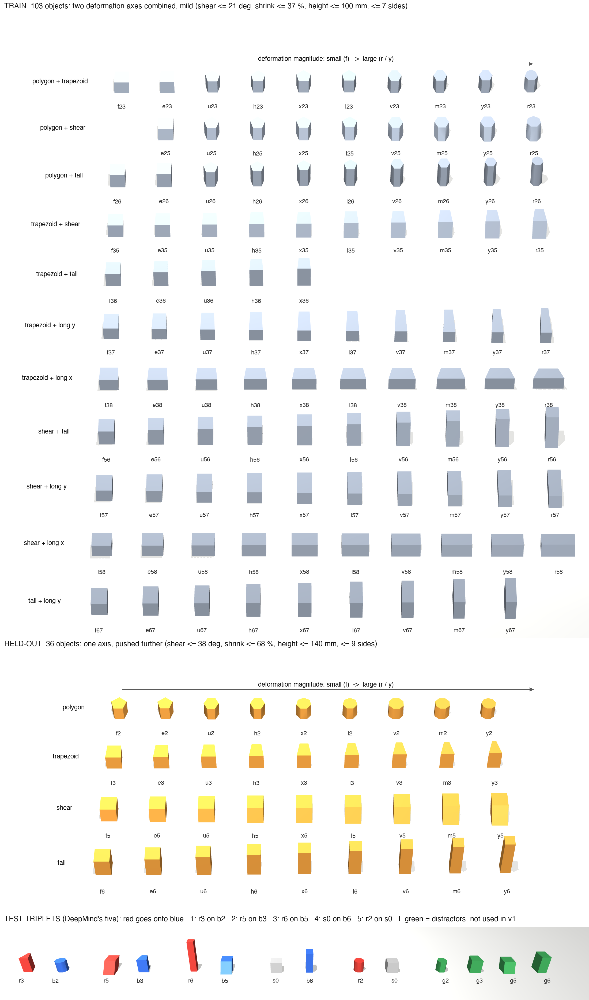
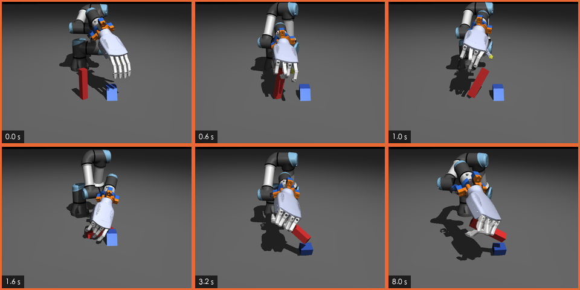
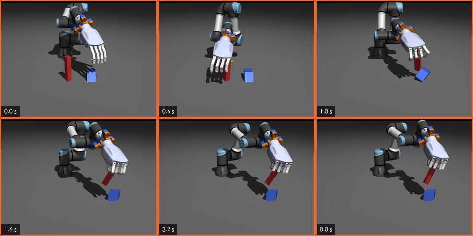

换形状叠放（RGB-Stacking 式测试，UR3e + L20）：只看位姿的策略，对拿到真实形状的策略
测试是什么：桌上一红一蓝两个物体，把红的叠到蓝的上面并松手。物体是从一个 50 mm 方块按参数变形出来的 152 个棱柱（DeepMind RGB-Stacking 的物体集）。策略只在其中 103 个上训练，然后在三档上各跑 4096 局：训练形状、36 个留出形状、DeepMind 的五个测试组合。
这一版比两条臂。D 的策略只看位姿，不知道物体长什么样；E 额外拿到两个物体的真实形状参数——现实里拿不到，它回答的是「知道形状最多能好多少」。第三条臂 S（从 SDF 学出来的形状码）还在训练，评完后补进本页。
| 版本 | 日期 | 变了什么 | 原因／证据 | 结果／记录 | 截图／视频 |
|---|---|---|---|---|---|
| v1 | 2026-11-12 | 首版：物体集、环境、脚本基线，D / E 两条臂的训练与三档评测 | 要在「形状变了」的测试上比方法臂（2026-11-11 提出） | 成功率（训练 / 留出 / 测试）：D 87.9 / 74.4 / 61.3 %；E 90.8 / 78.1 / 65.4 %；S 训练中。§ 3。11-12 补：失败局逐局回放，§ 5 | 图 2 · 视频 1 · 视频 2 |
§ 1结论
- 知道形状有用，但只有 3–4 个点。E − D（同一批世界配对，95 % 区间）：训练形状 +2.9 [+1.6, +4.3]，留出形状 +3.7 [+1.8, +5.6]，测试组合 +4.1 [+2.7, +5.4]。
- 留出形状上的增益全在细高物体。把局按「有没有细高物体」（高 ÷ 最大底边 ≥ 2.5）分开：有细高物体的局 E 比 D 高 +13.8 点 [+8.1, +19.5]，其余的局差 0.0 点 [-1.4, +1.3]。
- D 从训练到留出掉的 13.5 个点，是细高物体变多了，不是形状变新了。细高局占比：训练 8.4 %，留出 27.0 %。去掉细高局，D 在留出形状上是 92.4 %，和训练形状的 91.9 % 一样。
- 细高物体难，主要不是因为不知道形状。拿到真实形状参数的 E 在细高局也只有 60.4 %（训练）和 39.2 %（留出）；其余的局是 93.6 % 和 92.4 %。
- 细高物体上两条臂的败法不一样（11-12 逐局回放，留出档 111 局）。D 的 82 局失败里 74 局没到过叠放位：红色物体拿歪了，或者底座被碰倒。E 的 68 局失败里 34 局到过叠放位，其中 29 局手从没退开（13 局直到局末红色物体都还在叠放位）。是策略不会松手，还是一松就倒所以不松，现在分不出来（§ 5）。
- 倾斜 ≥ 35° 是一道坎，形状信息挪不动它。留出形状里倾斜 38° 的 y5：D 54.4 %，E 53.6 %。测试组合 2（倾斜 42° 的 r5）：43.6 % 和 43.8 %。训练集里倾斜最大 21°，E 的编码器在这里是外推，所以这也可能只说明「编码器不会外推」。逐局回放（留出档）：难的是陡倾斜物体当底座的局（15 局里 D 成 5 局、E 成 5 局），样子是放上去之后底座倒了；底座为什么倒没有验证。
- 测试组合 3 两条臂都是 0 %（脚本基线 0/40）。细高的 r6 在抓起的那一下就歪了，之后一直斜着拿在手里，放不上去（图 5）。
- 脚本基线（不学习，按形状选夹持侧）：60.2 / 66.7 / 25.5 %。五个测试组合里只有「方块叠到窄板上」那组稳定成功（40/40）。学出来的 D 臂比它高 28（训练）/ 8（留出）/ 36（测试）个点；两边条件不完全相同，只作参照。
- 对 z 这条线意味着什么（这是判读，不是测量）。这个测试里「知道形状」的上限增益只有 3–4 个点，而且集中在一类物体上。S 即使追平 E，能看到的差距也很小。要用这个测试分辨不同的方法臂，得先解决细高／大倾斜物体的控制问题，或者只在这两类物体上评测。
§ 2跑了什么（v1）
| 项 | 内容 |
|---|---|
| 实验线 | 操作线 仿真里的 UR3e 机械臂 + L20 灵巧手，强化学习策略。和手势预测线没有关系。 |
| 任务 | 把红的叠到蓝的上面并松手。每局 16 s（400 步，控制 25 Hz）。红在 (0.40, −0.16) m 附近，蓝在 (0.42, 0) 附近，都直立起始。 |
| 成功判据 | 红的重心在蓝的重心正上方（水平偏差 < 20 mm，高度偏差 < 6 mm），红和蓝都直立（倾斜 < 10°），手离红块表面 > 30 mm，红的速度 < 0.1 m/s，连续保持 15 步（0.6 s）。斜着搭上去不算，手没松开不算。 |
| 物体集 | 152 个凸棱柱，按 DeepMind 公布的变形参数重建（不是他们的 CAD 网格），种子形状是 50 mm 方块。训练 103 个，留出 36 个，测试 13 个（图 1）。名字里的数字是变形轴：2 多边形，3 一头收窄，5 倾斜，6 拉高，7 / 8 拉长；字母是幅度，f 最小，r / y 最大。 |
| 机器人与动作 | UR3e（6 个关节）+ L20 右手（16 个手指自由度）。动作 22 维：手基座位置增量（每步 ≤ 2 cm）、转动增量（每步 ≤ 0.06 rad）、16 个手指目标增量；每步用阻尼最小二乘逆解换成手臂关节目标。 |
| 仿真 | MuJoCo-Warp（mujoco 3.13，warp 1.17），仿真 250 Hz。每局随机：红的质量 ×[0.8, 1.2]，摩擦 [0.7, 1.2]，物体位置 ±20 mm，偏航随机，手臂关节 ±0.03 rad。 |
| 策略看到什么 | 95 维：手臂关节角和速度、手指关节角、手基座位姿、腕部力和力矩、上一步动作、两个物体的位姿和相对位置。没有任何形状量。各臂只在这之外多一个输入槽（下表）。策略网络都是 512-256-128 的 MLP。 |
| 训练 | PPO，4096 个并行环境，4 亿步，学习率 3e-4，折扣 0.97，熵系数 0.01。D 94 分钟，E 86 分钟（berlin，一张 GPU）。训练用 412 对（红, 蓝）；75 % 的局从脚本演示的中间帧起步（348 对有演示），25 % 从真实起点起步。 |
| 选点 | 每条臂的候选检查点 = 最后三个 + 训练中抽查分最高的五个（D 共 6 个，E 共 7 个），各跑 2048 局真实起点、众数动作，留成功率最高的那个：D 选最后一个（4.06 亿步），E 选 3.45 亿步（图 6）。 |
| 评测 | 每档 4096 局，全部真实起点，取动作分布的众数（不采样），两条臂用同一批世界（seed 1）。训练档实际抽到 408 对，留出档 365 对，测试档是固定的五组。区间是 95 % 自助法（4000 次重采样）：训练和留出档按「物体对」整组重采样，测试档按局。 |
| 代码与记录 | human_machine_interaction · training/reinforcement_learning/services/level_3_rgb_stack/（环境与脚本），…/level_1_object_sets/rgb_objects.py（物体集），记录 human_machine_interaction · training/plan/2026-11-11-rgb-shape-stacking.md。代码在工作树里，还没有提交。 |
三条方法臂：只有一个输入槽不同
| 臂 | 策略额外拿到什么 | 现实里拿得到吗 | 状态 |
|---|---|---|---|
| D | 什么都没有，只有位姿 | 拿得到 | 已评 |
| E | 两个物体的真实生成参数（边数、收缩、倾斜、尺寸）＋质量比＋摩擦，过一个 256-128 的编码器 | 拿不到——它是上界 | 已评 |
| S | 每个物体一个 32 维形状码（DeepSDF 式自动解码器在 103 个训练形状上学出；留出和测试形状用冻结的解码器反解）＋外接半径＋物理量 | 要有物体几何；v1 用离线反解的码，不是在线估计 | 训练中 |

§ 3结果
3.1 三档成功率
| 臂 | 训练形状 成功 % | 抓起过 % | 留出形状 成功 % | 抓起过 % | 测试组合 成功 % | 抓起过 % |
|---|---|---|---|---|---|---|
| 脚本（不学习） | 60.2 124/206 | 73.8 | 66.7 144/216 | 79.6 | 25.5 51/200 | 60.0 |
| D | 87.9 [85.6, 90.1] | 100.0 | 74.4 [70.7, 78.1] | 99.7 | 61.3 [59.8, 62.8] | 98.1 |
| E | 90.8 [88.5, 92.8] | 100.0 | 78.1 [74.5, 81.6] | 100.0 | 65.4 [64.0, 66.8] | 99.1 |
「抓起过」= 红块离开桌面 20 mm 以上至少一步。两条臂几乎每局都抓得起来（≥ 98 %），差别全在抓起之后：没送到叠放位，或者送到了但没叠成（各占多少见 § 5 的逐局回放）。脚本的条件不完全一样（位置抖动 ±10 mm，CPU 上的 MuJoCo 3.10，每档约 200 局），只作量级参照。
3.2 E 比 D 高多少（同一批世界配对）
| 档 | E − D（百分点） | 两臂都成 % | 只有 E 成 % | 只有 D 成 % |
|---|---|---|---|---|
| 训练形状 | +2.9 [+1.6, +4.3] | 84.5 | 6.2 | 3.3 |
| 留出形状 | +3.7 [+1.8, +5.6] | 68.3 | 9.7 | 6.0 |
| 测试组合 | +4.1 [+2.7, +5.4] | 53.4 | 12.0 | 7.9 |
两条臂在同一批世界上评，所以可以逐局配对。三档的区间都不含 0。但注意「只有 D 成」的局也有 3–8 %：E 不是在 D 的基础上多做成几局，两个策略各有各的失手。区间是「这两个固定策略在不同世界上的差」的不确定度，不含换种子的波动——每条臂只训了一次。
3.3 五个测试组合
| 组合 | 红 → 蓝（尺寸 mm） | 脚本 % | D % | E % | DeepMind 专家 % （在该组上训练） |
|---|---|---|---|---|---|
| 1 | r3（一头收窄 75 %，41×49×71）→ b2（八棱柱，45×45×50） | 15.0 6/40 | 82.7 抓起 100.0 | 88.5 抓起 99.8 | 77.7 |
| 2 | r5（倾斜 42° 的 50 mm 块）→ b3（收窄 48 %，46×49×63） | 7.5 3/40 | 43.6 抓起 100.0 | 43.8 抓起 100.0 | 47.4 |
| 3 | r6（细高，29×29×150）→ b5（倾斜 31° 的 50 mm 块） | 0.0 0/40 | 0.0 抓起 90.7 | 0.0 抓起 95.7 | 83.5 |
| 4 | s0（50 mm 方块）→ b6（窄高板，32×48×96） | 100.0 40/40 | 80.6 抓起 100.0 | 98.9 抓起 100.0 | 79.9 |
| 5 | r2（十棱柱，45×45×50）→ s0（50 mm 方块） | 5.0 2/40 | 99.6 抓起 100.0 | 95.6 抓起 100.0 | 89.5 |
| 平均 | 五组等权 | 25.5 | 61.3 | 65.4 | 75.6 |
DeepMind 那一列不能和我们的数直接比。它是 rgb_stacking 仓库 README 公布的五个状态版专家策略，每个专家就在它那一个测试组合上训练（论文里的 Skill Mastery），1000 局、2 个种子平均；机器人是 Sawyer + 平行夹爪，仿真也不同。我们的 D / E 从没见过这五组的形状（对应论文的 Skill Generalization）。放在这里只为了看一件事：哪几组本身就难——他们的专家也是组合 2 最低（47.4 %）。来源：Lee et al., Beyond Pick-and-Place: Tackling Robotic Stacking of Diverse Shapes, CoRL 2021。
§ 4差在哪
4.1 细高物体
| 档 · 哪些局 | 局数 | D % | E % | E − D |
|---|---|---|---|---|
| 训练形状 · 都不细高 | 3750 | 91.9 [89.9, 93.6] | 93.6 [91.6, 95.3] | +1.7 [+0.5, +2.9] |
| 训练形状 · 有细高物体 | 346 | 43.9 [33.3, 55.1] | 60.4 [46.7, 73.9] | +16.5 [+9.2, +24.5] |
| 留出形状 · 都不细高 | 2992 | 92.4 [90.2, 94.3] | 92.4 [90.1, 94.4] | 0.0 [-1.4, +1.3] |
| 留出形状 · 有细高物体 | 1104 | 25.5 [19.3, 31.4] | 39.2 [31.3, 46.4] | +13.8 [+8.1, +19.5] |
| 测试组合 · 都不细高 | 3277 | 76.6 | 81.7 | +5.1 |
| 测试组合 · 有细高物体 | 819 | 0.0 | 0.0 | 0.0 |
「细高」= 高 ÷ 最大底边 ≥ 2.5。属于这一类的物体（尺寸 mm）：训练形状：r26（37×37×100）、r56（39×39×100）、y26（38×38×95）；留出形状：l6（37×37×113）、m6（33×33×131）、v6（35×35×122）、x6（39×39×104）、y6（31×31×140）；测试组合：r6（29×29×150）。测试档的「有细高物体」就是组合 3 一组，「都不细高」是另外四组，四个固定组合上的区间没有意义，所以不给。
2.5 这条线是看了结果之后才定的。它不是一个开关：按红块的高宽比分三段，成功率是逐段下降的。
| 臂 · 档 | 红块高宽比 < 1.5 | 1.5 – 2.5 | ≥ 2.5 |
|---|---|---|---|
| D · 训练形状 | 92.1 3423 局 | 74.5 556 局 | 26.5 117 局 |
| D · 留出形状 | 82.0 3201 局 | 75.9 348 局 | 28.9 547 局 |
| E · 训练形状 | 92.7 3423 局 | 85.6 556 局 | 59.8 117 局 |
| E · 留出形状 | 84.4 3201 局 | 81.0 348 局 | 39.1 547 局 |
4.2 倾斜角
| 档 | 倾斜角（两个物体里较大的） | 局数 | D % | E % |
|---|---|---|---|---|
| 训练形状 | 0°（没有倾斜） | 1065 | 95.8 | 95.7 |
| 训练形状 | 1–15° | 1333 | 96.9 | 98.2 |
| 训练形状 | 15–25° | 1352 | 83.9 | 87.4 |
| 留出形状 | 0°（没有倾斜） | 1411 | 97.2 | 95.7 |
| 留出形状 | 1–15° | 338 | 97.6 | 97.3 |
| 留出形状 | 15–25° | 476 | 97.5 | 99.6 |
| 留出形状 | 25–35° | 528 | 89.0 | 91.3 |
| 留出形状 | ≥ 35° | 239 | 54.4 | 53.6 |
| 测试组合 | 0°（没有倾斜） | 2458 | 87.6 | 94.3 |
| 测试组合 | ≥ 35° | 819 | 43.6 | 43.8 |
这张表已经去掉了有细高物体的局。到 35° 之前成功率掉得不多；过了 35°，留出档只剩 y5（38°），测试档只剩组合 2 的 r5（42°），两条臂都掉到一半上下，而且彼此没有差别。训练档 15–25° 那一段偏低（84–87 %），是因为里面混了「又斜又偏高」的 56 系列物体。
一个没有验证的解释：成功判据要求红的重心对准蓝的重心。斜棱柱的底面中心不在重心正下方——y5 偏 19.5 mm，r5 偏 22.5 mm。重心对准时，底面有一截悬在蓝块顶面之外。按名义尺寸估算，组合 2 里 r5 的重心离支撑边缘只有约 2.5 mm，稍偏一点就会翻。这是从几何算出来的，没有在仿真里单独验证过。
4.3 最差的物体
| 档 · 角色 | 物体 | 尺寸 mm 与变形 | 局数 | D % | E % |
|---|---|---|---|---|---|
| 训练形状 · 当红块 | r56 | 39×39×100，倾斜 21° | 39 | 0.0 | 0.0 |
| 训练形状 · 当红块 | y56 | 40×40×95，倾斜 19° | 39 | 20.5 | 17.9 |
| 训练形状 · 当红块 | r26 | 37×37×100，7 条边 | 39 | 35.9 | 89.7 |
| 训练形状 · 当红块 | y26 | 38×38×95，6 条边 | 39 | 43.6 | 89.7 |
| 训练形状 · 当蓝块 | m56 | 41×41×90，倾斜 17° | 10 | 0.0 | 0.0 |
| 训练形状 · 当蓝块 | r56 | 39×39×100，倾斜 21° | 60 | 0.0 | 0.0 |
| 训练形状 · 当蓝块 | y56 | 40×40×95，倾斜 19° | 80 | 8.8 | 1.2 |
| 训练形状 · 当蓝块 | x37 | 42×77×50，收窄 20 % | 9 | 44.4 | 100.0 |
| 留出形状 · 当红块 | y6 | 31×31×140 | 110 | 0.0 | 5.5 |
| 留出形状 · 当红块 | m6 | 33×33×131 | 110 | 7.3 | 16.4 |
| 留出形状 · 当红块 | v6 | 35×35×122 | 109 | 21.1 | 39.4 |
| 留出形状 · 当红块 | l6 | 37×37×113 | 109 | 53.2 | 59.6 |
| 留出形状 · 当蓝块 | m6 | 33×33×131 | 100 | 2.0 | 9.0 |
| 留出形状 · 当蓝块 | y6 | 31×31×140 | 139 | 2.2 | 2.9 |
| 留出形状 · 当蓝块 | v6 | 35×35×122 | 119 | 6.7 | 47.9 |
| 留出形状 · 当蓝块 | l6 | 37×37×113 | 70 | 34.3 | 42.9 |
每格是 D 最差的四个物体，旁边是 E 在同一个物体上的成功率。名单几乎全是 6 结尾（拉高）的物体，再加上倾斜最大的 y5 / m5 和训练集里又斜又高的 r56 / y56。细高物体当蓝块（被叠的那个）和当红块一样难。
§ 5失败怎么发生（录像回放）
把评测里的局重录一遍关节位置（训练、留出各 412 局，测试 60 局；每局与 § 3 同一个策略、同一类起点），逐步看红色物体有没有到过叠放位（质心对质心 20 mm 内、高度差 6 mm 内、红直立），把每一局归到四类之一。「到过又丢」= 到过叠放位，但没有连续保持 15 步同时让手退开 30 mm，所以没判成功。这里的局数比 § 3 的 4096 局少，比例会有出入；提前终止 0 局，保护性停机 0 局。
| 臂 | 档 | 物体族 | 局数 | 叠成 | 没抓起 | 没到过叠放位 | 到过又丢 | 到过又丢：在位步数中位 |
|---|---|---|---|---|---|---|---|---|
| D | 训练 | 含细高物体 | 35 | 13 | 0 | 15 | 7 | 11（0.4 s） |
| D | 训练 | 其余 | 377 | 349 | 0 | 15 | 13 | 11（0.4 s） |
| D | 留出 | 含细高物体 | 111 | 29 | 2 | 72 | 8 | 15.5（0.6 s） |
| D | 留出 | 倾斜 ≥ 35° | 24 | 11 | 0 | 3 | 10 | 13（0.5 s） |
| D | 留出 | 其余 | 277 | 266 | 0 | 5 | 6 | 4.5（0.2 s） |
| D | 测试 | 含细高物体 | 12 | 0 | 2 | 10 | 0 | – |
| D | 测试 | 倾斜 ≥ 35° | 12 | 8 | 0 | 2 | 2 | 6（0.2 s） |
| D | 测试 | 其余 | 36 | 32 | 0 | 3 | 1 | 287（11.5 s） |
| E | 训练 | 含细高物体 | 35 | 22 | 0 | 6 | 7 | 265（10.6 s） |
| E | 训练 | 其余 | 377 | 352 | 0 | 9 | 16 | 22.5（0.9 s） |
| E | 留出 | 含细高物体 | 111 | 43 | 0 | 34 | 34 | 184（7.4 s） |
| E | 留出 | 倾斜 ≥ 35° | 24 | 13 | 0 | 3 | 8 | 18.5（0.7 s） |
| E | 留出 | 其余 | 277 | 267 | 0 | 4 | 6 | 10.5（0.4 s） |
| E | 测试 | 含细高物体 | 12 | 0 | 1 | 11 | 0 | – |
| E | 测试 | 倾斜 ≥ 35° | 12 | 5 | 0 | 2 | 5 | 13（0.5 s） |
| E | 测试 | 其余 | 36 | 34 | 0 | 2 | 0 | – |
- 留出档的细高物体：D 的 82 局失败里 72 局是「没到过叠放位」。E 把这一类压到 34 局，但多出 34 局「到过又丢」，在位步数中位 184 步（7.4 s）：红色物体已经在正确位置待了很久，只是没判成功。
- 陡倾斜（≥ 35°）：两条臂的失败大多是「到过又丢」，在位只有 6–18 步（不到 1 s）。
- 这两类失败的局最后各停成什么样子，这张表看不出来，见下面的逐局回放。
逐局回放：失败的局最后停在哪（2026-11-12 补，仍属 v1）
上表只分了「到过 / 没到过叠放位」。这一步把留出档录像里最难的两类局（含细高物体 111 局、倾斜 ≥ 35° 24 局）的失败局逐步重算物体姿态，按最后一步的样子分成五类，排在前面的优先：
- 局末仍在叠放位：最后一步红色物体还在叠放位，只是没满足「手退开并保持 15 步」。
- 底座倒了：蓝色物体倾斜超过 30°。
- 红色物体躺倒：红色物体倾斜超过 30°。
- 还在手里：红色物体离桌 20 mm 以上，而且手还在它的包围球之内。
- 其他。
「手退开过」= 红色物体在叠放位的某一步，掌心和所有指尖都已经离开它的包围球 30 mm 以上（就是成功判据里的退开距离）。「离桌后歪过 30°」= 红色物体被抓离桌面之后，倾斜角超过过 30°。
| 物体族 | 臂 | 红色物体 | 失败局数 | 局末仍在叠放位 | 底座倒了 | 红色物体躺倒 | 还在手里 | 其他 | 手退开过 | 离桌后歪过 30° |
|---|---|---|---|---|---|---|---|---|---|---|
| 含细高物体 | D | 到过叠放位 | 8 | 1 | 6 | 1 | 0 | 0 | 2 | 8 |
| 含细高物体 | D | 没到过叠放位 | 74 | 0 | 39 | 24 | 8 | 3 | – | 66 |
| 含细高物体 | E | 到过叠放位 | 34 | 13 | 13 | 5 | 3 | 0 | 5 | 18 |
| 含细高物体 | E | 没到过叠放位 | 34 | 0 | 20 | 8 | 6 | 0 | – | 30 |
| 倾斜 ≥ 35° | D | 到过叠放位 | 10 | 0 | 7 | 3 | 0 | 0 | 6 | 10 |
| 倾斜 ≥ 35° | D | 没到过叠放位 | 3 | 0 | 3 | 0 | 0 | 0 | – | 2 |
| 倾斜 ≥ 35° | E | 到过叠放位 | 8 | 0 | 8 | 0 | 0 | 0 | 4 | 8 |
| 倾斜 ≥ 35° | E | 没到过叠放位 | 3 | 0 | 1 | 2 | 0 | 0 | – | 3 |
细高或陡倾斜的那个物体是被搬的红色物体，还是蓝色底座（留出档录像，括号里是叠成的比例）：
| 哪个物体细高 / 陡倾斜 | 局数 | D 叠成 | E 叠成 |
|---|---|---|---|
| 细高的是红色物体（被搬的那个） | 53 | 15（28 %） | 21（40 %） |
| 细高的是蓝色底座 | 56 | 14（25 %） | 22（39 %） |
| 两个都细高 | 2 | 0（0 %） | 0（0 %） |
| 陡倾斜的是红色物体 | 9 | 6（67 %） | 8（89 %） |
| 陡倾斜的是蓝色底座 | 15 | 5（33 %） | 5（33 %） |
- 细高物体 · D：失败在抓和搬。82 局失败里 74 局没到过叠放位。细高的是红色物体时（失败 38 局），36 局没到过，其中 33 局它离桌后歪过 30° 以上，局末 22 局躺倒；细高的是底座时（失败 42 局），32 局局末底座倒了。也就是：红色的拿歪了，底座被碰倒了。
- 细高物体 · E：一半的失败是「送到了，手没退开」。68 局失败里 34 局到过叠放位（D 只有 8 局），所以「E 多出来的能力是把细高物体送到位」这一条成立。这 34 局里 29 局手从没退开过：13 局直到局末红色物体都还在叠放位（在位 211–379 步，即 8.4–15.2 s；局末手都还在它的包围球内）；12 局是手还没退开时底座就倒了；其余 4 局局末还在手里或红色物体躺倒。手退开过的只有 5 局，其中 4 局退开后红色物体倒了，1 局底座倒了。
- 11-12 更正：首次发布时写的「卡住它的是松手、退开」要改细。回放确认了「送到了但手没退开」是 E 在细高物体上最常见的失败样子，但分不出两种原因：① 策略在这种情形下不松手、不退开；② 一松手就会倒，所以它不松（手没退开时底座就倒的 12 局、松手后倒的 5 局都指向这边）。松手后站住的局已经算成功了（E 在细高局成 43 局），所以失败局里本来就看不到「松手并站住」。要分开这两种原因，得强制松手再数（§ 10 下一步第 3 条）。
- 陡倾斜：难在它当底座，样子是「放上去，底座倒了」。陡倾斜的物体当底座的 15 局，D 成 5 局、E 成 5 局；当红色物体的 9 局，D 成 6 局、E 成 8 局。失败局里红色物体大多到过叠放位（D 10/13，E 8/11），在位步数中位 13 / 18.5 步（0.5 / 0.7 s），没有一局局末还在叠放位；局末底座倒了的 D 10/13、E 9/11。到过叠放位的失败局里约一半手已经退开过（D 10 局里 6 局，E 8 局里 4 局）。局末底座没倒、只是红色物体躺倒的，D 3 局、E 2 局。
- 判读，没有验证：陡倾斜的底座为什么倒。§ 8 的静态探针里陡倾斜底座只有 1 个配对（u6 放到 y5）：质心对质心放，对准和偏 5 mm 站得住，偏 10 mm 就倒；而叠放位的判据允许偏 20 mm。一种可能是「判据允许的偏差比这类底座的稳定余量大」，另一种是手退开前把底座碰倒。两种都没有单独验证。
- 测试组合 3（r6 → b5）：两条臂 12 局都失败，几乎全是「没到过叠放位」；红色物体抓起了，但在手里是歪的，一直没放下去（图 5）。这一组没有做逐局回放。


§ 6视频
所有视频里的世界都按序号取（每组序号最小的一局，或某个物体序号最小的一局），不按结果挑。画面左上角写这一局是哪两个物体、结果是什么、这类局一共成了几局；绿框 = 叠成，橙框 = 没成。视频是把训练机上录下的关节位置在本机 MuJoCo 里重放渲染的，不是训练时的画面。
§ 7训练曲线与选点
| 臂 | 训练墙钟 | 训练中抽查，最后一次 | 选中的检查点 | 选点评测 |
|---|---|---|---|---|
| D | 94 分钟 | 68.8 | 406.3M 步 | 89.1 |
| E | 86 分钟 | 72.7 | 345.4M 步 | 91.2 |
线和点为什么差 15–20 个点。训练中抽查是 128 局、采样动作（策略输出分布里随机取）；选点评测和 § 3 的三档评测用众数动作（分布的中心）。同一个策略，去掉动作噪声后成功率高出一截。所以线只用来看「学没学会、何时学会」，报数一律用众数动作的评测。128 局的抽查本身也有约 ±8 个点的抖动。
两条臂选中的检查点步数不同（D 是最后一个，4.06 亿步；E 是 3.45 亿步的那个），这是选点规则的结果，不是人为对齐；§ 3 的差值里包含这一点差异。
§ 8脚本基线与探针
脚本基线是一段不学习的固定程序：按物体的真实尺寸算夹持侧、张开宽度和下放高度，走「到上方 → 下降 → 合指 → 抬起 → 平移 → 下放 → 松手 → 退开」。它回答的是「这套物体和这只手，照章办事能做到多少」。次数：训练 206 次、留出 216 次、测试 200 次（每组 40）。
| 脚本变体 | 训练 抓起 / 叠成 | 留出 抓起 / 叠成 | 测试 抓起 / 叠成 | 测试组合 1–5 叠成（每组 40） |
|---|---|---|---|---|
| 看形状 + 选夹持侧，偏航随机 基线 | 73.8 / 60.2 | 79.6 / 66.7 | 60.0 / 25.5 | 6、3、0、40、2 |
| 看形状 + 选夹持侧，偏航取好的 | 87.9 / 72.8 | 88.0 / 72.2 | 65.0 / 29.5 | 5、11、3、40、0 |
| 看形状，手固定 | 78.2 / 56.8 | 75.9 / 58.3 | 56.0 / 30.5 | 20、2、1、38、0 |
| 不看形状（当成 50 mm 方块），手固定 | 74.8 / 56.3 | 69.4 / 46.8 | 42.5 / 34.0 | 23、6、0、39、0 |
读法：脚本在测试组合上最好也只有 34 %，组合 3 基本为 0、组合 4（50 mm 方块叠到 32×48×96 mm 的 b6）几乎全成；「看不看形状」对脚本的影响集中在留出档（叠成 58.3 对 46.8）。学出来的 D 臂比基线脚本在训练档高 28 个点、测试档高 36 个点，留出档只高 8 个点（74.4 对 66.7）。脚本的条件和策略评测不完全相同（位置抖动 ±10 mm 对 ±20 mm；CPU MuJoCo 3.10 对 Warp），所以只当参照。
静态放置探针（不经过手，直接把红色物体放到蓝色物体上看站不站得住，660 例）：按质心对质心放，训练 39/40、留出 39–40/40、测试 28–30/30；偏 5 mm、10 mm 结果几乎不变。说明绝大多数配对在几何上是放得稳的，失败主要来自抓、搬和松手，不是目标位姿本身立不住。
抓取探针（脚本只做抓起，1824 例）：夹持跨度 ≤ 60 mm 抓起 62–64 %，60–75 mm 降到 28 %，> 75 mm 只有 9 %；横着夹 65 % 对顺着夹 48 %；物体偏航 120° / 300° 时 74–80 %，60° / 240° 时 39–40 %。脚本从没叠成过的物体：heldout/m6、test/r2、test/r5、test/r6、train/r23、train/r56。
§ 9这版的简化与不能下的结论
和 DeepMind 的 RGB-Stacking 相比，v1 做了八处简化：
- 物体直立起始，只随机偏航；DeepMind 的物体可以躺倒。
- 没有绿色干扰物（DeepMind 每局三个物体）。
- 物体是按公开参数重建的凸棱柱，不是 DeepMind 的 CAD 网格。
- 成功要求红色物体直立（倾斜 < 10°）；斜着搭上去不算。DeepMind 的判据不要求这一点。
- 训练用 103 个物体里的 412 对，不是所有组合；其中 64 对没有演示起点。
train/r56在真实起点偶尔自己站不稳（≤ 0.1 % 的世界）。- 每条臂 1 个种子；没有第二阶段（由历史估计 ẑ）；S 臂在新形状上用的是离线反解的 z*，不是在线估计。
- 脚本基线的位置抖动（±10 mm）比环境的（±20 mm）小，且跑在 CPU MuJoCo 3.10 上。
- 不能说「E 比 D 好 3–4 个点」是稳定结论——每臂只有 1 个种子，区间只反映物体对和局的抽样，不含种子间差异。
- 不能和 DeepMind 的数字比高低——机器人、夹爪、仿真器、物体起始姿态、成功判据都不同；而且那一列是每组单独训练的专家，不是换形状泛化。
- 「细高」的 2.5 倍阈值是看了结果之后定的，用来描述差距在哪，不是事先登记的分组。
- 陡倾斜的失败是「放上去之后底座倒了」（§ 5 逐局回放），但底座为什么倒没有验证；E 在细高物体上手不退开，是不会松，还是一松就倒，也没有分开。
- § 5 的逐局回放只做了留出档的两类局（111 + 24 局，每条臂 1 个种子），局数小，只能看样子，不能当比例用。
- S 臂还没有结果；E 是「拿到真实形状」的上界，现实里拿不到。
§ 10日志与下一步
| 日期 | 运行 | 机器与用时 | 结果 | 状态 |
|---|---|---|---|---|
| 2026-11-11 | 脚本基线 + 静态 / 抓取探针 | Mac，CPU MuJoCo 3.10 | 见 § 8 | 完成 |
| 2026-11-11 | rgb/sdf（S 臂的形状码） | berlin，1 张 GPU，11 分钟 | 32 维码，103 个训练形状；近表面误差 0.11 mm（表内）/ 0.26 mm（留出反解）/ 0.32 mm（测试反解） | 完成 |
| 2026-11-11 | stack_v1_none_s0（D） | berlin，94 分钟，4.06 亿步 | 选点 89.1 %；三档 87.9 / 74.4 / 61.3 % | 完成 |
| 2026-11-11 | stack_v1_mu_s0（E） | berlin，86 分钟，4.06 亿步 | 选点 91.2 %；三档 90.8 / 78.1 / 65.4 % | 完成 |
| 2026-11-12 | 失败局逐局回放（fail_detail.py、detail_xtab.py、who_rates.py） | Mac，CPU MuJoCo 3.10，用 berlin 录下的每一步状态（qpos）重算 | 留出档细高 111 局、陡倾斜 24 局的失败局结束状态，见 § 5 | 完成 |
| 2026-11-12 | stack_v1_Sb_s0（S） | berlin，训练中 | 记录时训练到 2.6 亿步（共 4.06 亿），训练中抽查在 60–72 % 之间；选点和三档评测排在训练之后 | 进行中 |
真实配置。PPO：4096 个并行环境，每次展开 40 步，32 个小批、每批数据更新 4 轮，批大小 256，学习率 3e-4，折扣 0.97，熵系数 0.01，奖励缩放 0.1，每局 400 步；75 % 的局从演示途中的状态开始、25 % 从真实起点开始；训练时 S 臂的形状码加 0.3 的噪声，评测不加。评测：每档 4096 局，随机种子 1，三条臂用同一批世界。
代码与结果位置。human_machine_interaction · training/reinforcement_learning/services/level_3_rgb_stack/（环境、脚本、演示）、level_1_object_sets/rgb_objects.py（152 个物体）、level_2_rgb_stack/task_terms.py（成功判据）；记录 human_machine_interaction · training/plan/2026-11-11-rgb-shape-stacking.md，脚本和报告 JSON 在同目录的 2026-11-11-rgb-shape-stacking-sources/。代码基于 59cad26 之上的未提交工作树。训练产物在 berlin 的 ~/latent_adapt/rgb/（每个运行一个目录，含检查点、eval_id_T30_<档>.json）。
已知失败与原因。测试组合 3 两条臂 0 %（细高物体在手里歪，没放下，图 5）；留出档细高物体 D 25.5 % / E 39.2 %——D 是拿歪或碰倒底座，E 有一半是送到了但手没退开（§ 5）；倾斜 ≥ 35° 两条臂约 54 %（留出）和 44 %（测试组合 2）——留出档难在陡倾斜的物体当底座，放上去后底座倒了，原因未验证。
下一步。
- S 臂评完后补进 § 3–§ 5，看 SDF 形状码能拿到 E 的增益里的多少。
- 每条臂补到 3 个种子，再判断 3–4 个点的差值是否成立。
- 细高物体：强制松手测试——在 E 第一次把红色物体送到叠放位的那一步，强制张开手并退开，数有多少局站得住。站得住，问题在策略不松手（查松手的奖励和判据）；站不住，问题在放的精度或底座的稳定性。
- 陡倾斜底座：记下放下那一步的水平偏差、手和底座有没有接触，分清是偏差超过了稳定余量还是手碰倒的；静态探针补到所有陡倾斜底座（现在只有 1 例）。
- 第二阶段：由交互历史在线估计 ẑ，替换 S 臂在新形状上的离线 z*。